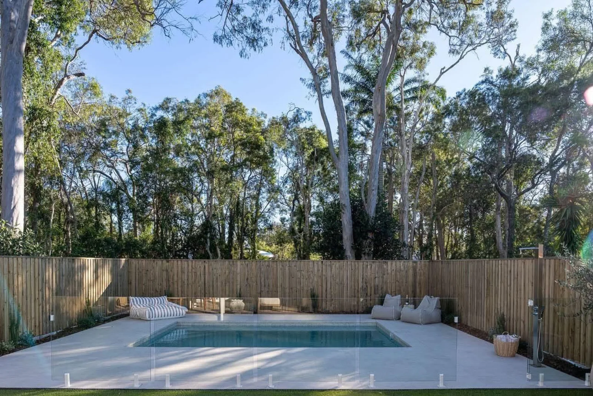
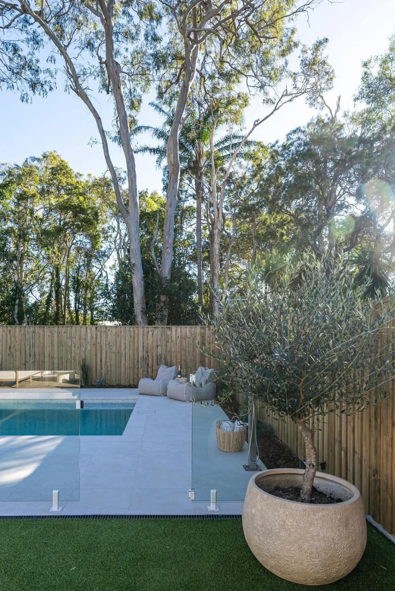

This Ormiston home has that relaxed bayside feel, and the backyard needed to match. We set a light-interior pool into a broad apron of pale paving, so the water glows against the house and there's plenty of room for loungers.
Frameless glass keeps the view open from the alfresco, while natural timber fencing wraps the boundary and blends into the bushy backdrop. Lawn and potted olives finish it off, and the established gums behind were kept and worked around.



Services on this job: Custom concrete pools · Glass pool fencing · Pool landscaping · More work in Redlands & bayside
Send us your block and your wishlist. We'll come back with what's possible.
Start your project